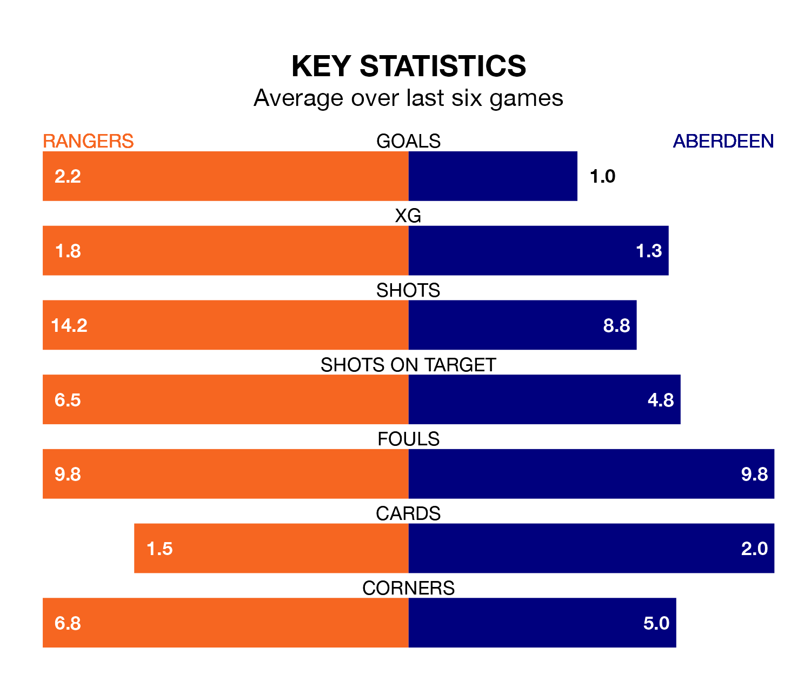

Rangers are heavy favourites to keep all three points at home in Tuesday's late kick-off against Aberdeen.
Rangers, who sit second in Premiership with 23 games played, are priced at 1.3 to seal victory at the Ibrox Stadium.
Sitting six places and 30 points behind them in the table, Aberdeen are 12.0 to win with *Betting Company*, while the draw is at 5.5.
With 48 goals in 23 games so far this season, Rangers are the league's second-highest scorers with 2.1 goals per game. And they are conceding fewer than average, letting in 11 goals at a rate of 0.5 per game.
Aberdeen, meanwhile, are below average scorers, with 1.1 goals per game, compared to a league average of 1.3. They have conceded 1.5 goals per game.
With Jack Butland between the sticks, the home side can rely on one of the league's safest pair of hands. He has kept 15 clean sheets in his 23 appearances this season, and no 'keeper has prevented the opposition scoring more often in Premiership.
In the visitors' net, Kelle Roos has four clean sheets in 22 games. He has conceded a goal every 73 minutes, nearly three times as often as the 188 minutes between goals for Butland.
In the last 10 years, Rangers and Aberdeen have played each other on 31 occasions. Rangers won 18 of them, Aberdeen six, and they drew seven times.
On average, Rangers scored 1.8 goals and Aberdeen 0.9 in those matches.
Their last meeting was on December 17, when Rangers won 1-0 at home.
Rangers are in fantastic form in Premiership, with five wins and one loss from their last six games.
With a win and three draws over that period, Aberdeen's form is much worse – they have taken six points from 18, compared to Rangers's 15.
Rangers's last match was on Saturday, a 3-0 win against Livingston, with Fábio Silva, Rabbi Matondo and Todd Cantwell getting the goals for Rangers.
Aberdeen drew 1-1 with Celtic last time out, also on Saturday, with Bojan Miovski on the scoresheet.
Tuesday's match will be refereed by Don Robertson, who has taken charge of 10 Premiership games so far this season, issuing two red cards and booking 35 players. He has awarded one penalty.
The last Rangers game Robertson refereed was a 4-0 home win against Hibernian on October 21. His last Aberdeen match was their 4-0 win at home against Ross County on September 24.
Updated: 14:59 (UTC), 05/02/24